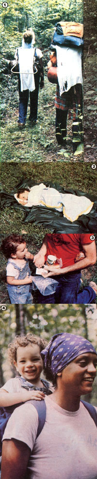

We were going to call this article "Backpacking With Baby"; but since every child is unique (and there's nothing like a trek in the woods to remind you of that!), we decided to title it . . .
Backpacking with "Buggie"
Stan Peto
"I love to go a-wandering, a baby on my back" was not the way "The Happy Wanderer" began his famous hiking song . . . and no wonder! At first thought, the idea of lugging-and coping with-an infant or toddler (along with all one's gear) on a backpacking trip would seem to be enough to discourage any wilderness traveler from joyously singing "Valderee! Valderaa!"
However, if you're the parent of a young child, love the outdoors, and are willing to be pretty darned adaptable, you and yours can have a very pleasurable walking adventure. In fact, my wife Becky and I carted our 18month-old toddler Nathan (also known as "Nate", "Naterbug", "Buggie", or simply "The Bug") on a four-day hike last year . . . and found that-diapers and all-it was one of the most rewarding family experiences we'd ever had!
DAY ONE
We planned a short 21-mile hike-in North Carolina's Shining Rock Wilderness-which would allow us to have a leisurely experience and not force us to push ourselves. (The ground rule was to put our energy into being there, not into getting there.) Becky and I also decided to set out during the warm, sunny days of late spring and plotted our route to go up a steep hollow, all the way around its perimeter, and then back down the same center trail . . . guaranteeing that, if worst came to worst, we'd never be more than a few miles away from our car.
However, as we first set out along the banks of Shining Creek, we were a bit nervous that The Bug might turn out to be an unhappy traveling companion. And sure enough, Nate didn't take to the woods right off. He soon got restless in his Gerry child carrier, and showed no interest in sampling our lightweight trail food.
Furthermore, in spite of the beautiful wooded surroundings, his mom and dad weren't any too happy, either. You see, we'd tried to equalize our two loads by tying several pounds of gear onto the child carrier . . . but soon discovered that hauling a squirming 30-pound youngster was hard enough without strapping any extra weight to his pack! Becky and I found we had to switch loads frequently, and take a lot of breaks, while negotiating the 2,400-foot climb.
Still, our trio hadn't yet experienced any major difficulties, and we made it out of the hollow-to our planned campsite at Shining Rock Gap-by late afternoon. There we learned our first valuable lesson about the trials of camping with a toddler . . . namely, guard your valuables! We hadn't even started a fire before our active offspring had lost our only cooking spoon in a blueberry thicket!
We managed to fix a one-pot stew dinner anyway, only to find that Nate wasn't about to eat it. However, since our hiking food supply was necessarily very limited, we told The Bug he'd have to "eat or do without" . . . and he went without. Soon after that, we burned a hole in one of the diapers we'd hung next to the fire. (We carried three sets of quick-drying gauze "pants" on the hike, washing them after every change and then hanging them by a campfire or on our packs.)
Considering the trials of that first day, we were glad to find that going to bed, at least, worked out smoothly. The three of us were so pooped by the time night fell that we crawled into our shared tent and, all together, fell fast asleep.
DAY TWO
As I quietly snuck out of bed the next morning to start a breakfast fire, I knew we were about to face our biggest test. Nathan had actually managed tolerably well so far, but our son is far from a cheerful riser, even at home. So I figured that when he woke up and found himself in a strange outdoor world, he might pitch quite a fit.
And that's exactly what he did. Worse yet, nothing-not orange drink, cereal, hugs, calm assurances, or even the chance to nurse at his mother's breast-was able to quiet our child's storm of howls and screams . . . until I pulled out our "secret weapon": The Little People's Book of Baby Animals (Random House, $2.50). I'd brought the two-ounce miniature volume along for just such a crisis, and the joy of seeing a new picture book-even at a 6,000-foot-elevation, fog-enshrouded campsite-calmed Nathan down almost immediately. After that, he ate his breakfast with gusto. ("Hooray!" Becky and I silently cheered. "The food strike is over!")
In fact, that morning offered many omens portending a good trip ahead: Bright sunlight burned off the fog . . . Becky found the missing wooden cooking spoon . . . and-just after we set out-we spotted a beautiful baby fawn blithely grazing nearby. (It looked for all the world like the one in Nate's new animal book.)
Day Two lived up to its promise, too! For one thing, we had a lovely, scenic hike over the north ridge of the hollow and back down the side slope to Shining Creek. Then too, Becky and I had shifted all the gear save one sleeping bag and Nate's diapers over to the real backpack, so the child carrier was a good bit easier to bear than it had been. And our son suddenly realized that being toted through the woods on a parent's back, practicing his new vocabulary word ("Faan!"), and grabbing at branches in passing was all plenty enjoyable! (We decided to give him a new nickname: Nate the Royal Camel Rider.)
At the creek, we all relished a long break . . . playing in the pools, romping on the rocks, and basking in the sun. Then I carried Nathan across the fast-flowing stream and, speaking firmly, told him to stay put so I could assist Becky with our gear. Wonder of v onders, he stayed! That bit of self-restraint-plus his generally cooperative behavior in camp that night-showed my wife and me that the discipline demanded of us by a woods trip was actually beginning to rub of on our son!
DAY THREE
The toddling trekker was a bit grumpy when he woke the next morning, but we were able to break through his mood with some juice, raisins, and an exploratory trip to the stream by our campsite. Our morning's climb up the south ridge also went smoothly. In fact, the only mishaps of the entire day were trivial: Nathan managed to smear peanut butter and jelly all over himself at lunch, and we got caught in a midafternoon shower (but covered ourselves with ponchos and kept hiking).
At the night's campsite, situated on a flat area above the creek, Nate amused himself by throwing small rocks toward the water below, wiping his oft-sullied hands on his mom's pants, and "helping" his dad lay the twig tipi for the campfire by gaily heaping on the biggest sticks he could find! After dinner, Bug and I played chase. When he hid behind a cherry limb, I pointed out some of the branch's foliage to him, and something in the child's mind clicked. For the first time, he began to notice the individual leaves around him, to recognize particularity in the masses of surrounding greenery. Nate spent the next 20 minutes pointing out every leaf he could find. It was an exciting discovery . . . for both of us.
DAY FOUR
The Bug woke up happily on the last morning of our hike. (Why not? He was an old hand in the woods by now.) Becky and I, though, were reluctant to start heading out to our car, so we just played and lounged around after breakfast . . . until Nate finally dragged his mother over to the Gerry pack and tried to climb in!
Obeying The Royal Camel Rider's commands, we broke camp and hiked the final few miles to the vehicle. As we walked, Nathan snoozed peacefully in his pack, and Becky and I reflected on our trip. It hadn't been easy-there's no way that carrying over 50 pounds of gear and a 30-pound child can be called easy-but it had been special. Away from the never-ending chores and distractions of home, the three of us had enjoyed a rare opportunity to give most of our attention to one another. And even more than that, having to live and travel together in the backwoods had forced us to work more closely together as a family.
HOME AGAIN
The next day, back in the "real world", Nate threw a giant tantrum . . . got into a clawing fight with his two-year-old girlfriend . . . and-in the middle of the night-woke up and stayed awake for over four hours! Becky and I were initially surprised that our son was having more trouble adjusting to returning home than he'd had to being in the woods. But after we thought over how much we already missed the beauty and sharing of the previous four days, we realized that he was simply going through the very same difficulties his parents were experiencing!
POSTSCRIPT
With a little careful planning and preparation, it's possible to take a child of almost any age backpacking. To do so, though, the adults must know what they're doing in the woods (they should have solid hiking experience) . . . focus their intentions more on enjoying the outdoors than on covering ground (there's no point in testing a youngster's patience or an adult's back strength) . . . pick the best weather conditions possible . . . and be flexible enough to adjust to changing situations and to the child's needs. If you've got those four "givens" in hand, you can then work out such details as dealing with paper or cloth diapers, providing sunscreen or a hat, and even devising cold-weather gear for your toddler.
Of course, Becky and I are eager to take our family back out into the woods ourselves. But since we're now blessed with a two-month-old daughter (baby Jessica) as well as our 2-1/2year-old son, we figure we've got too much of a load to carry for backpacking. We're going to pile our gear and children into a canoe . . . and go backcountry paddling instead!
EDITOR'S NOTE: A lot of excellent advice on exploring the outdoors with children can be found in Goldie Silverman's Backpacking With Babies and Small Children ($5.95 postpaid from Outdoor Bookstore, Dept. TMEN, 16812 36th Avenue West, Lynnwood, Washington 98036) and Marilyn Doan's Starting Small in the Wilderness: The Sierra Club Outdoors Guide for Families ($6.95 plus $1.75 shipping and handling from Sierra Club Books, Dept. TMEN, Box 3886, Rincon Annex, San Francisco, California 94119).
In addition, you can find information about the Gerry and the Antelope aluminum framed child carriers in Mom's Marketplace on page 169 of this issue.
|
 [1] While one set of diapers dries en route, Nate gaily balance histreasured tiger cup on Becky's head. [2] ""The Bug"" pretends to nap in the sleep sack his mother made from three light blankets and a sheet. [3] Munching food (such as raisins, dried apples, and crackers), a special cup, and an extra-special picture book helped make our son a contented backpacker. [4] The Royal Camel-Rider in all his glory. |
|
|